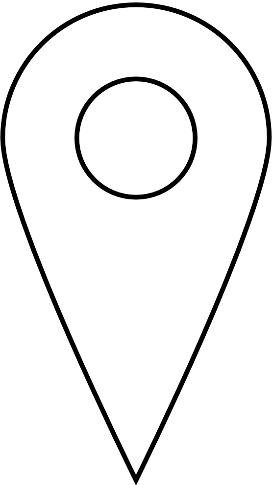

Veure Mapa
Compartiu la vostra localització si voleu veure la vostra posició en el plànol
Home
Inventari sobre mapa
+
-

Elements en el mapa
Tots els elements trobats
Dades de la Imatge pujada
Dades enregistrades